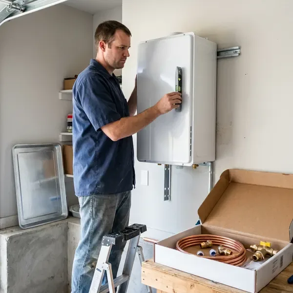

Electric Tankless Water Heater Installation in Salem, OR
Want endless hot water without a gas line in Salem, OR? We install electric tankless units that need no venting and fit almost anywhere.
- Guaranteed Work
- Fast, Reliable Installation
- No Venting Required
- Energy Efficient

Need Electric Tankless Water Heater Installation in Salem, OR?
We size each unit by flow rate, temperature rise and panel capacity.
Reliable Electric Tankless Water Heater Installation for Salem, OR Homes
JFL Plumbing reviews your electrical panel, flow needs and incoming water temperature before recommending a unit. We work alongside licensed electricians when added circuits or panel upgrades are needed.
Our expertise includes:
- Code Compliant Venting (if applicable)
- Precise Water Line Connections
- Accurate Electrical Load Assessment

Additional Plumbing Installation Services in Salem, OR
We install water heaters, pumps, lines, and fixtures across Salem, OR with precision workmanship that meets every local code.


Customers
Why Choose JFL Plumbing for Electric Tankless Water Heater Installation in Salem, OR?
The eastern side of the state is drier, with hotter summers and colder winters that stress pipes and water heaters differently. We match the unit to your home and incoming water temperature so you get steady hot water without surprises.
- Accurate Sizing, We size units by flow rate, temperature rise and household demand.
- Long Lifespan, Electric tankless heaters generally last much longer than conventional tank-style water heaters, offering greater long-term value.
- Space Savings, Wall-mounted units free up garage and closet space.
Citywide Coverage
From all-electric homes to additions and guest suites, we serve every part of Salem. We plan installs that keep connections easy to reach for future service.
Experienced Team
Our team of plumbers has extensive experience with electric tankless water heater installation, including the electrical demands and water conditions found in Oregon. We stay updated on the latest technology and installation best practices. You can trust our technicians to perform the job right the first time.
Safety-First Approach
When installing an electric tankless water heater, proper electrical connections and circuit protection are critical. JFL Plumbing adheres to the strictest safety standards and local building codes for every installation in Salem, providing you with peace of mind.
Trusted Certified Salem Plumbing Services Professionals
At JFL Plumbing, we take pride in providing licensed, certified plumbing services throughout Salem, OR. Backed by recognized industry credentials, our experienced plumbers combine technical skill with genuine customer care. Whether it is repair, installation, or maintenance, we follow strict safety and quality standards to deliver long-lasting results you can trust.
Call Us Now PHCC Plumbing Contractor Recognition
PHCC Plumbing Contractor Recognition Better Business Bureau (BBB) Accreditation
Better Business Bureau (BBB) Accreditation Angi Certified Pro
Angi Certified Pro ISO 9001 Quality Management Certification
ISO 9001 Quality Management CertificationEnergy-Smart Electric Tankless Water Heater Installation in Salem, OR
Whole-Home Electric Tankless Installation in Salem
Whole-home electric tankless units can supply multiple fixtures at once when properly sized. Models like the Stiebel Eltron Tempra and Rheem RTEX often require multiple dedicated 240 volt circuits. We size the unit based on your peak flow and temperature rise. The eastern side of the state is drier, with hotter summers and colder winters that strain pipes and water heaters differently. We install isolation valves for simple descaling.

Navien Electric Tankless Water Heater Installation in Salem, OR
JFL Plumbing is experienced with installing leading brands like Navien, known for their high-efficiency tankless water heaters. Navien units offer advanced features and reliable performance, providing consistent hot water with precise temperature control. We make sure your Navien unit is installed according to manufacturer specifications and local Salem, OR codes for proper function and warranty validity.
Electric Tankless Water Heater Upgrades in Salem, OR
Upgrading from a traditional tank water heater to an electric tankless model is a popular choice for Oregon residents looking for efficiency. We manage the entire conversion process, including safe removal and disposal of your old tank. Our plumbers ensure all new electrical lines and plumbing connections are correctly installed, meeting all local codes. This upgrade often frees up valuable space and can improve your home's energy performance.
Converting from Tank to Electric Tankless in Salem, OR
Switching from a tank water heater to electric tankless can free up space and reduce standby energy loss. We remove the old tank and install the new wall-mounted unit. Water lines are rerouted and new isolation valves are installed. We also confirm electrical capacity and coordinate new circuits. The result is a cleaner, more compact setup.
Electric Tankless Water Heater Sizing and Selection in Salem
Choosing the right electric tankless water heater size is essential for performance. In Salem, factors like groundwater temperature and your household's simultaneous hot water usage determine the ideal GPM (gallons per minute) output required. JFL Plumbing provides careful consultation to help you select a unit that closely matches your demand, preventing cold showers and supporting efficiency. We consider your home's plumbing layout and electrical panel capacity to recommend the best model.
Hard Water Protection for Tankless Units in Salem
Hard water can cause scale buildup in tankless heat exchangers and heating elements. Scale reduces efficiency and can trigger error codes. Soft water can be slightly corrosive, which may lead to pinhole leaks in copper pipe and greenish stains on fixtures. We recommend a water softener or scale inhibitor to protect your unit, and we install service valves for periodic descaling. Regular maintenance helps extend the life of your tankless heater.
Point-of-Use Electric Tankless Installation in Salem
Sometimes, specific areas of a home, like a guest bathroom or a remote kitchen sink in Salem, need dedicated hot water. Point-of-use electric tankless heaters are compact and installed directly at the fixture, providing instant hot water without waiting for it to travel from a central unit. This setup is especially efficient for reducing water waste and energy consumption in targeted areas.

Electric Tankless for Guest Suites and Additions in Salem, OR
Guest houses, guest suites and home additions often sit far from the main water heater. Running long hot water lines wastes water and energy. An electric tankless unit installed near the fixtures provides quick hot water. We size the unit for the space and its fixtures. This is an efficient solution for detached living spaces.
Electric Tankless Water Heater Installation Near Me in Salem, OR
Looking for 'electric tankless water heater installation near me' in Salem, OR? JFL Plumbing is your local expert, providing fast and reliable service throughout the area. Our proximity means quicker response times and a better understanding of the plumbing needs of Oregon homes.
When you search for electric tankless water heater installation near me, our local team is ready to help. We evaluate your home and recommend the right size unit. Installations are scheduled promptly.
JFL Plumbing at a Glance
- Fully licensed plumbing team covering Salem, OR
- 24/7 emergency service with same-day scheduling
- Upfront, flat-rate pricing before work begins
- 4.8-star rated by 657+ Oregon customers
Salem Map
Salem Information
- Population
- 177,432
- Area codes
- 503/458/541
- Service area
- Salem and communities within 40 miles
- Nearby
- Keizer, Albany, McMinnville, Corvallis
Electric tankless water heater installation is a practical choice for Salem, OR homes, offering energy efficiency and continuous hot water. The eastern side of the state is drier, with hotter summers and colder winters that strain pipes and water heaters differently.
Expert Services
Trust our professionals for reliable JFL Plumbing solutions in Salem, OR.
Our Specialized Plumbing Services in Salem, OR
At JFL Plumbing, we provide a complete range of plumbing services across Salem, OR. From leak detection to full system installations, our team ensures fast, precise, and affordable service for both residential and commercial properties. Explore our core services below:


How Our Electric Tankless Water Heater Installation Process Works in Salem, OR
Our installation process for electric tankless water heaters is straightforward and efficient, designed to minimize disruption to your Salem home.
Request a Quote
Call (971) 333-7694 or fill out our online form to schedule an initial consultation. We'll discuss your hot water needs and assess your home's electrical and plumbing systems.
On-Site Assessment
Our expert technician will visit your Salem home to evaluate your current setup, determine the best location for the new unit and confirm electrical requirements. This step is crucial for proper sizing.
Professional Installation
We meticulously install your new electric tankless water heater, making all necessary electrical connections and water line adjustments and ensuring proper flow and pressure. We test the unit carefully.
Frequently Asked Questions About Electric Tankless Water Heater Installation in Salem
The cost for electric tankless water heater installation in Salem, OR usually ranges from $2,500 to $6,000. This price includes the unit itself, which can be $600 to $2,000 or more, plus labor and any needed electrical upgrades to your panel or wiring. A detailed quote will be provided after a site assessment.
Most electric tankless water heater installations can be completed within a single day, typically 4 to 8 hours. However, if major electrical panel upgrades or extensive re-piping are required, the process may extend into a second day. We aim to minimize disruption and restore your hot water as soon as possible.
JFL Plumbing stands behind our work with a full labor warranty on all electric tankless water heater installations. Additionally, the units themselves come with manufacturer warranties, typically ranging from 5 to 10 years on the heat exchanger. We'll provide full details for your particular unit.
Water hardness varies from place to place. Soft water can be slightly corrosive, which may lead to pinhole leaks in copper pipe and greenish stains on fixtures. Like any water heater, electric tankless units benefit from regular flushing to prevent mineral buildup, especially if your Salem area has harder water. We can advise on maintenance and offer water softening solutions if needed.
For Oregon homes, electric tankless water heaters offer real energy savings by only heating water on demand, which is beneficial year-round. They also provide endless hot water and save space, which can be particularly useful in older homes with smaller utility areas.
Sizing an electric tankless water heater correctly is essential and depends on factors like the number of hot water fixtures in your home, your incoming groundwater temperature and your peak hot water demand. Our technicians will perform a careful assessment to recommend the ideal size for your Salem household.
Warranties vary by brand, often 5 to 7 years on heating elements and longer on other components. We also stand behind our installation work.
Fluctuating water temperature, error codes and reduced flow are common signs. Hard water scale is a frequent cause.
What People Are Saying About Our Plumbing Experts?

Sofia M.
Two new toilets installed in one visit, no mess left behind, and the tech even adjusted a faucet he noticed was dripping. Fair pricing and really friendly.
Toilet Installation · Keizer, OR
James P.
Our commercial plumbing system had a leak under the sink, and JFL Plumbing handled it professionally. The plumbers arrived quickly and restored everything without disruption to our customers.
Commercial Plumbing · Keizer, OR
Emily R.
I called JFL Plumbing for plumbing repair, and the technician was fast, polite, and thorough. They explained the problem clearly and fixed it the same day. I will definitely hire them again. Highly recommended!
Plumbing Repair · Corvallis, OR
Mark T.
When our office needed drain cleaning, JFL Plumbing provided quick, reliable service. The plumber arrived on time and made sure every drain flowed perfectly before leaving. Very satisfied.
Drain Cleaning · Corvallis, ORLaura S.
I scheduled a water heater replacement, and the team made the process smooth and affordable. The new unit works perfectly, and they cleaned up after completing the job.
Water Heater Replacement · Corvallis, OR
Daniel K.
A pipe burst at 11 pm and they actually answered. The plumber showed up within the hour, shut everything down, and had us back to normal the next morning. Could not ask for more.
Emergency Plumbing · Oregon City, OR